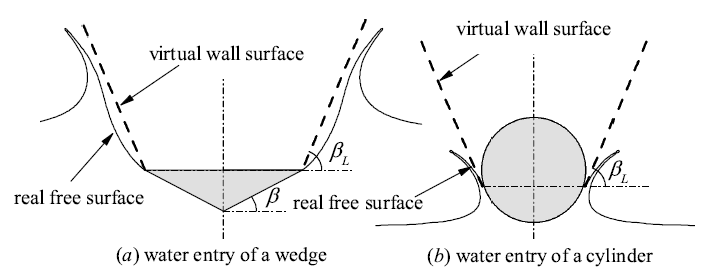

Theoretical study on slamming and transition stages of normal impacts of symmetrical bodies on calm and wavy water surfaces

Abstract
Wave impact problems attract extensive attention and have a wide range of applications in the marine field. There is an increasing need to propose a general theoretical solution for the impacts of bodies on both calm and wavy water surfaces. In this paper, the slamming and transition stages of the high-speed normal impacts of two-dimensional (2D) symmetrical bodies on calm and wavy water surfaces are studied theoretically, where the body surfaces can be linear, concave or convex. The fluid is assumed to be incompressible, inviscid, and weightless and to have a negligible surface tension effect, and the flow is assumed to be irrotational. For the slamming stage of a wave impact, a modified Wagner model (MWM) is proposed to accurately predict the wetted length of bodies and the pressure distribution on the body surface. The MWM has a better prediction performance than the modified Logvinovich model (MLM) compared with the similarity solution for the impacts of linear wedges on the linear incident wave. For the transition stage of the normal impact of wedges on calm and wavy water surfaces, a curved fictitious body continuation (FBC) is proposed to extend the MWM from the slamming stage to the transition stage. The MWM with a curved FBC can better predict the force than the linear FBC compared with the CFD results.
Read the published article ↗